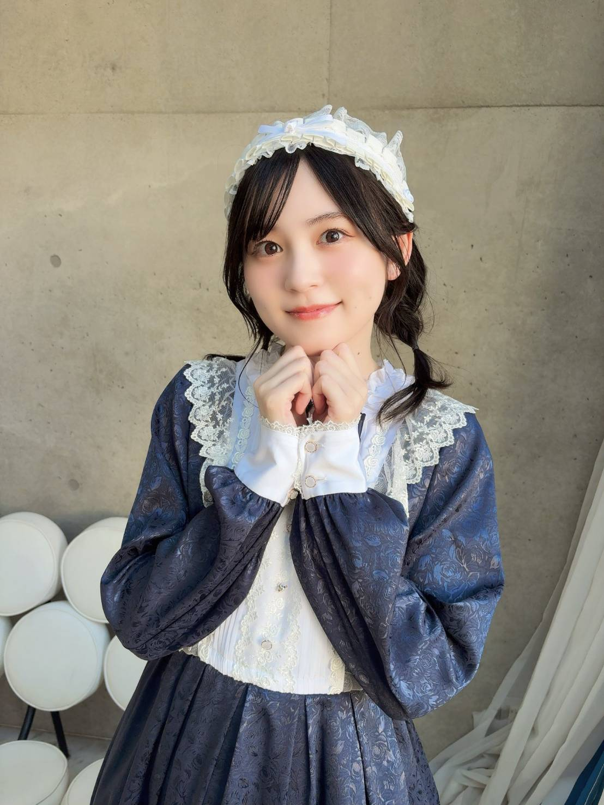

BanG Dream! 5th☆LIVE Day2: Roselia -Ewigkeit-
中島由貴在幕張展覽館舉行的演唱會中正式亮相，並宣布接任今井莉莎的演出者、加入 Roselia 擔任貝斯手，填補遠藤祐里香退休後的空缺。公開資料未說明中島由貴個人的加入動機。Natalie 報導
VOICE ACTRESS
聲優與歌手，以角色聲音連結不同作品與舞台。
PROFILE / YUKI NAKASHIMA
Yuki Nakashima
なかしま ゆき · 姓名順序：Nakashima Yuki
以聲音演繹不同角色，也以今井莉莎的身分參與 Roselia 的真人演出。擅長貝斯，並於 2020 年以個人歌手身分出道。
資料：事務所官方介紹、和歌山縣官方簡介（PDF）。

FIRST IMPRESSION / YUKI NAKASHIMA
我是在 Roselia 認識由貴的。第一次看到她站上舞台演奏貝斯，就被那份帥氣又專注的模樣吸引；舞台下的她卻有點呆萌、可愛。這種反差讓我越來越喜歡她。
ROSELIA / LIVE TIMELINE
依據公開資料，整理中島由貴加入 Roselia 後的人員變動與演出紀錄。
中島由貴在幕張展覽館舉行的演唱會中正式亮相，並宣布接任今井莉莎的演出者、加入 Roselia 擔任貝斯手，填補遠藤祐里香退休後的空缺。公開資料未說明中島由貴個人的加入動機。Natalie 報導
明坂聰美（白金燐子的聲優）宣布退出白金燐子及 Roselia 相關演出。這是明坂聰美的退任消息，與中島由貴接任今井莉莎並加入 Roselia 是兩件不同的人員變動。
志崎樺音加入，接任白金燐子的演出者。她在這場演出中首次以白金燐子的聲音演出。Animate Times 報導
Roselia 在日本武道館舉行公演。Real Sound 回顧報導此場為全員陣容首次演出。Real Sound 報導
演出地點為武藏野之森綜合體育廣場；演出曲目包括〈約束〉。Real Sound 的歌曲解析談及今井莉莎與湊友希那之間的連結。部分觀眾或粉絲回報中島由貴演唱時落淚；官方資料未確認落淚一事。Bushiroad 官方 PR Times Real Sound 樂曲解析
SELECTED ROLES / 05
出演精選，並非官方人氣排名。